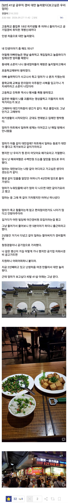

ㅠㅠ

ㅠㅠ
아빠가 여행사운영해서 부모님 수시로해외여행감
닉언일치의 현장!
누구물어보신분
이런 저능아가 이런 일 겪어야 하는데 ㄲㅂ ㅋㅋ 제발 암이라도 쳐걸리기를 남의 불행에서 자랑하는 앰뒤련
어머니는 고생은다하시고 가셨네

잘 살고 있는데, 개병신은 무슨
진짜 꼭 부모님 모시고 여행 가봐라 우리가 재밌는건 어른들도 재미있어 하더라 나는 양가 부모님들이 파도풀에서 그렇게 재밌게 노실거라곤 생각도 못했다
뜬금없지만 막짤에 나온 왼쪽 음식이름은 파리머리볶음이다 실제로 파리머리가 들어가는건 아님
본문 같은 사연 보면 안타깝기도 하고, 나는 그래도 어머니랑 같이 여행도 자주 다니는 상황이라서 다행이라는 생각도 들고 함.
1년에 못해도 2~4번은 일본이든 동남아쪽으로 여행을 가는데, 항상 어머니께서 얘기하시는게 '내가 나이를 더 먹으면 못 가는데, 이때라도 많이 가봐야지.'라고 하시는데, 이제 겨우 60대 다되어감.
그러면 난 항상 대답으로 '건강만 잘 챙기면 언제든지 같이 갈테니깐 건강 잘 챙기고, 어디 아프면 제발 병원에 가서 돈걱정하지 말고 진료받고 치료해'라고 답해줌.
아버지랑은 연끊고 산지 이제 10년이 되어가서 연락안하니깐 알게 뭐야 이런식이지만, 우리어머니는 30대부터 아버지 일 도와주시면서 무릎연골 다 나가고, 아버지가 술 자시면 가정폭력하는 바람에 어머니랑 동생이랑도 사이가 안좋음.
고등학교 졸업하고 알바로 돈벌어서 생활비로 알바비 다 대주다가 군대에서 다쳐서 공익으로 빠지고 나서 소집해제하고 나서 바로 좆소로 취업하고 돈을 벌다보니깐 이젠 우리 어머니를 챙겨야겠다는 생각에 해외여행으로 자주 갔던게 벌써 10년이 넘어감ㅋㅋㅋ
내년에도 일본이나 동남아쪽으로 여행갈 생각인데, 내가 살면서 제일 잘하는 행동이 아닌가 싶음.
비행기 싸게끊는법있음? 나도효도마렵네..
또 부모님세대가 좋아하능 여행지 따로잇음??
비행기 싸게 끊는 방법이야 뭐 여러가지긴한데, 난 주로 비수기쪽으로 방향잡고 최소 6개월전엔 예약 걸어둠.
그래야 그나마 싸니깐ㅋㅋㅋ
부모님세대가 좋아하는 여행지는 솔직히 케바케라서 난 추천은 못해주겠네. 나도 구글에다가 검색 존나 해보고나서 가는 거라...ㅋㅋㅋ
암튼 효도는 부모님 건강하실때 하는 게 좋으니깐 되도록이면 빨리 하는 걸 추천함.
이유 : 걷는 상황이 엄청 많음. 그리고 날씨탓도 포함. 구경을 하더라도 시력 이슈도 무시못함.
갱비가 뭔지 한 20초 생각했다 ㅋㅋ
어휴 우리 아버지도 암 걸리시고 지금 투병 중이신데 한참을 울었네.
어휴.. 아 너무 눈물난다. 어찌 살지 모르겄다.
공무직경비 교대근무기준 초봉 대략 4천정도 나올거임
호봉쌓이면 6천도 가고해서 꽤 괜찮은 직장? 하는일은 딱히없음